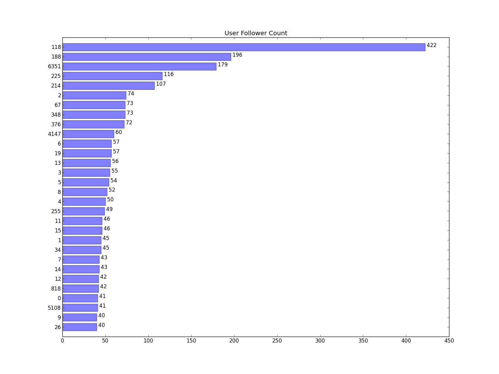

| Item | Count | Rate |
|---|
| 118 | 422 | 4.24% | | 188 | 196 | 1.97% | | 6351 | 179 | 1.80% | | 225 | 116 | 1.17% | | 214 | 107 | 1.07% | | 2 | 74 | 0.74% | | 67 | 73 | 0.73% | | 348 | 73 | 0.73% | | 376 | 72 | 0.72% | | 4147 | 60 | 0.60% | | 6 | 57 | 0.57% | | 19 | 57 | 0.57% | | 13 | 56 | 0.56% | | 3 | 55 | 0.55% | | 5 | 54 | 0.54% | | 8 | 52 | 0.52% | | 4 | 50 | 0.50% | | 255 | 49 | 0.49% | | 11 | 46 | 0.46% | | 15 | 46 | 0.46% | | 1 | 45 | 0.45% | | 34 | 45 | 0.45% | | 7 | 43 | 0.43% | | 14 | 43 | 0.43% | | 12 | 42 | 0.42% | | 818 | 42 | 0.42% | | 0 | 41 | 0.41% | | 5108 | 41 | 0.41% | | 9 | 40 | 0.40% | | 26 | 40 | 0.40% | | 1245 | 40 | 0.40% | | 22 | 38 | 0.38% | | 715 | 38 | 0.38% | | 31 | 37 | 0.37% | | 16 | 36 | 0.36% | | 18 | 36 | 0.36% | | 129 | 36 | 0.36% | | 17 | 35 | 0.35% | | 160 | 35 | 0.35% | | 1012 | 35 | 0.35% | | 20 | 34 | 0.34% | | 33 | 34 | 0.34% | | 430 | 34 | 0.34% | | 32 | 33 | 0.33% | | 44 | 33 | 0.33% | | 73 | 33 | 0.33% | | 97 | 33 | 0.33% | | 36 | 32 | 0.32% | | 68 | 32 | 0.32% | | 360 | 31 | 0.31% | | 60 | 30 | 0.30% | | 95 | 30 | 0.30% | | 1782 | 30 | 0.30% | | 45 | 29 | 0.29% | | 47 | 29 | 0.29% | | 52 | 29 | 0.29% | | 57 | 29 | 0.29% | | 10 | 28 | 0.28% | | 115 | 28 | 0.28% | | 182 | 28 | 0.28% | | 28 | 27 | 0.27% | | 38 | 27 | 0.27% | | 85 | 27 | 0.27% | | 224 | 27 | 0.27% | | 37 | 26 | 0.26% | | 40 | 26 | 0.26% | | 669 | 26 | 0.26% | | 25 | 25 | 0.25% | | 112 | 25 | 0.25% | | 132 | 25 | 0.25% | | 507 | 25 | 0.25% | | 2675 | 25 | 0.25% | | 48 | 24 | 0.24% | | 23 | 23 | 0.23% | | 29 | 23 | 0.23% | | 50 | 23 | 0.23% | | 65 | 23 | 0.23% | | 70 | 23 | 0.23% | | 98 | 23 | 0.23% | | 122 | 23 | 0.23% | | 126 | 23 | 0.23% | | 208 | 23 | 0.23% | | 39 | 22 | 0.22% | | 51 | 22 | 0.22% | | 99 | 22 | 0.22% | | 100 | 22 | 0.22% | | 1711 | 22 | 0.22% | | 24 | 21 | 0.21% | | 27 | 21 | 0.21% | | 43 | 21 | 0.21% | | 61 | 21 | 0.21% | | 76 | 21 | 0.21% | | 86 | 21 | 0.21% | | 146 | 21 | 0.21% | | 35 | 20 | 0.20% | | 54 | 20 | 0.20% | | 2316 | 20 | 0.20% | | 21 | 19 | 0.19% | | 63 | 19 | 0.19% | | 80 | 19 | 0.19% | | 120 | 19 | 0.19% | | 353 | 19 | 0.19% | | 645 | 19 | 0.19% | | 1755 | 19 | 0.19% | | 30 | 18 | 0.18% | | 53 | 18 | 0.18% | | 56 | 18 | 0.18% | | 58 | 18 | 0.18% | | 74 | 18 | 0.18% | | 79 | 18 | 0.18% | | 89 | 18 | 0.18% | | 111 | 18 | 0.18% | | 135 | 18 | 0.18% | | 167 | 18 | 0.18% | | 170 | 18 | 0.18% | | 240 | 18 | 0.18% | | 328 | 18 | 0.18% | | 437 | 18 | 0.18% | | 46 | 17 | 0.17% | | 62 | 17 | 0.17% | | 64 | 17 | 0.17% | | 136 | 17 | 0.17% | | 265 | 17 | 0.17% | | 576 | 17 | 0.17% | | 806 | 17 | 0.17% | | 3932 | 17 | 0.17% | | 78 | 16 | 0.16% | | 117 | 16 | 0.16% | | 121 | 16 | 0.16% | | 128 | 16 | 0.16% | | 181 | 16 | 0.16% | | 330 | 16 | 0.16% | | 719 | 16 | 0.16% | | 1605 | 16 | 0.16% | | 69 | 15 | 0.15% | | 83 | 15 | 0.15% | | 88 | 15 | 0.15% | | 123 | 15 | 0.15% | | 175 | 15 | 0.15% | | 203 | 15 | 0.15% | | 241 | 15 | 0.15% | | 41 | 14 | 0.14% | | 49 | 14 | 0.14% | | 66 | 14 | 0.14% | | 71 | 14 | 0.14% | | 72 | 14 | 0.14% | | 84 | 14 | 0.14% | | 91 | 14 | 0.14% | | 102 | 14 | 0.14% | | 104 | 14 | 0.14% | | 105 | 14 | 0.14% | | 109 | 14 | 0.14% | | 145 | 14 | 0.14% | | 150 | 14 | 0.14% | | 235 | 14 | 0.14% | | 243 | 14 | 0.14% | | 307 | 14 | 0.14% | | 535 | 14 | 0.14% | | 578 | 14 | 0.14% | | 13749 | 14 | 0.14% | | 42 | 13 | 0.13% | | 82 | 13 | 0.13% | | 94 | 13 | 0.13% | | 101 | 13 | 0.13% | | 119 | 13 | 0.13% | | 140 | 13 | 0.13% | | 147 | 13 | 0.13% | | 148 | 13 | 0.13% | | 151 | 13 | 0.13% | | 288 | 13 | 0.13% | | 331 | 13 | 0.13% | | 402 | 13 | 0.13% | | 455 | 13 | 0.13% | | 551 | 13 | 0.13% | | 1030 | 13 | 0.13% | | 1240 | 13 | 0.13% | | 1443 | 13 | 0.13% | | 4796 | 13 | 0.13% | | 59 | 12 | 0.12% | | 81 | 12 | 0.12% | | 103 | 12 | 0.12% | | 149 | 12 | 0.12% | | 161 | 12 | 0.12% | | 180 | 12 | 0.12% | | 187 | 12 | 0.12% | | 201 | 12 | 0.12% | | 202 | 12 | 0.12% | | 249 | 12 | 0.12% | | 432 | 12 | 0.12% | | 478 | 12 | 0.12% | | 505 | 12 | 0.12% | | 731 | 12 | 0.12% | | 77 | 11 | 0.11% | | 92 | 11 | 0.11% | | 96 | 11 | 0.11% | | 124 | 11 | 0.11% | | 138 | 11 | 0.11% | | 139 | 11 | 0.11% | | 156 | 11 | 0.11% | | 163 | 11 | 0.11% | | 169 | 11 | 0.11% | | 179 | 11 | 0.11% | | 193 | 11 | 0.11% | | 197 | 11 | 0.11% | | 237 | 11 | 0.11% | | 245 | 11 | 0.11% | | 336 | 11 | 0.11% | | 397 | 11 | 0.11% | | 416 | 11 | 0.11% | | 2674 | 11 | 0.11% | | 55 | 10 | 0.10% | | 75 | 10 | 0.10% | | 90 | 10 | 0.10% | | 93 | 10 | 0.10% | | 107 | 10 | 0.10% | | 113 | 10 | 0.10% | | 137 | 10 | 0.10% | | 165 | 10 | 0.10% | | 178 | 10 | 0.10% | | 183 | 10 | 0.10% | | 195 | 10 | 0.10% | | 200 | 10 | 0.10% | | 257 | 10 | 0.10% | | 268 | 10 | 0.10% | | 308 | 10 | 0.10% | | 363 | 10 | 0.10% | | 377 | 10 | 0.10% | | 422 | 10 | 0.10% | | 558 | 10 | 0.10% | | 874 | 10 | 0.10% | | 902 | 10 | 0.10% | | 945 | 10 | 0.10% | | 3084 | 10 | 0.10% | | 3272 | 10 | 0.10% | | 3290 | 10 | 0.10% | | 108 | 9 | 0.09% | | 125 | 9 | 0.09% | | 144 | 9 | 0.09% | | 153 | 9 | 0.09% | | 154 | 9 | 0.09% | | 159 | 9 | 0.09% | | 204 | 9 | 0.09% | | 210 | 9 | 0.09% | | 211 | 9 | 0.09% | | 213 | 9 | 0.09% | | 227 | 9 | 0.09% | | 259 | 9 | 0.09% | | 283 | 9 | 0.09% | | 302 | 9 | 0.09% | | 304 | 9 | 0.09% | | 327 | 9 | 0.09% | | 385 | 9 | 0.09% | | 407 | 9 | 0.09% | | 409 | 9 | 0.09% | | 520 | 9 | 0.09% | | 544 | 9 | 0.09% | | 677 | 9 | 0.09% | | 2019 | 9 | 0.09% | | 2533 | 9 | 0.09% | | 7380 | 9 | 0.09% | | 87 | 8 | 0.08% | | 127 | 8 | 0.08% | | 142 | 8 | 0.08% | | 143 | 8 | 0.08% | | 155 | 8 | 0.08% | | 158 | 8 | 0.08% | | 186 | 8 | 0.08% | | 192 | 8 | 0.08% | | 198 | 8 | 0.08% | | 199 | 8 | 0.08% | | 228 | 8 | 0.08% | | 229 | 8 | 0.08% | | 231 | 8 | 0.08% | | 233 | 8 | 0.08% | | 236 | 8 | 0.08% | | 253 | 8 | 0.08% | | 254 | 8 | 0.08% | | 266 | 8 | 0.08% | | 274 | 8 | 0.08% | | 280 | 8 | 0.08% | | 292 | 8 | 0.08% | | 297 | 8 | 0.08% | | 329 | 8 | 0.08% | | 361 | 8 | 0.08% | | 366 | 8 | 0.08% | | 375 | 8 | 0.08% | | 380 | 8 | 0.08% | | 387 | 8 | 0.08% | | 610 | 8 | 0.08% | | 1229 | 8 | 0.08% | | 45296 | 8 | 0.08% | | 106 | 7 | 0.07% | | 133 | 7 | 0.07% | | 134 | 7 | 0.07% | | 164 | 7 | 0.07% | | 168 | 7 | 0.07% | | 171 | 7 | 0.07% | | 173 | 7 | 0.07% | | 184 | 7 | 0.07% | | 189 | 7 | 0.07% | | 190 | 7 | 0.07% | | 196 | 7 | 0.07% | | 218 | 7 | 0.07% | | 223 | 7 | 0.07% | | 281 | 7 | 0.07% | | 300 | 7 | 0.07% | | 306 | 7 | 0.07% | | 313 | 7 | 0.07% | | 322 | 7 | 0.07% | | 326 | 7 | 0.07% | | 365 | 7 | 0.07% | | 367 | 7 | 0.07% | | 368 | 7 | 0.07% | | 378 | 7 | 0.07% | | 392 | 7 | 0.07% | | 412 | 7 | 0.07% | | 427 | 7 | 0.07% | | 469 | 7 | 0.07% | | 481 | 7 | 0.07% | | 555 | 7 | 0.07% | | 585 | 7 | 0.07% | | 652 | 7 | 0.07% | | 718 | 7 | 0.07% | | 1499 | 7 | 0.07% | | 1740 | 7 | 0.07% | | 1773 | 7 | 0.07% | | 6224 | 7 | 0.07% | | 14364 | 7 | 0.07% | | 21311 | 7 | 0.07% | | 110 | 6 | 0.06% | | 116 | 6 | 0.06% | | 141 | 6 | 0.06% | | 152 | 6 | 0.06% | | 166 | 6 | 0.06% | | 176 | 6 | 0.06% | | 177 | 6 | 0.06% | | 206 | 6 | 0.06% | | 215 | 6 | 0.06% | | 219 | 6 | 0.06% | | 220 | 6 | 0.06% | | 222 | 6 | 0.06% | | 247 | 6 | 0.06% | | 248 | 6 | 0.06% | | 260 | 6 | 0.06% | | 261 | 6 | 0.06% | | 293 | 6 | 0.06% | | 311 | 6 | 0.06% | | 319 | 6 | 0.06% | | 323 | 6 | 0.06% | | 324 | 6 | 0.06% | | 333 | 6 | 0.06% | | 341 | 6 | 0.06% | | 373 | 6 | 0.06% | | 383 | 6 | 0.06% | | 390 | 6 | 0.06% | | 398 | 6 | 0.06% | | 425 | 6 | 0.06% | | 426 | 6 | 0.06% | | 435 | 6 | 0.06% | | 452 | 6 | 0.06% | | 459 | 6 | 0.06% | | 466 | 6 | 0.06% | | 504 | 6 | 0.06% | | 506 | 6 | 0.06% | | 539 | 6 | 0.06% | | 577 | 6 | 0.06% | | 609 | 6 | 0.06% | | 643 | 6 | 0.06% | | 657 | 6 | 0.06% | | 689 | 6 | 0.06% | | 702 | 6 | 0.06% | | 939 | 6 | 0.06% | | 999 | 6 | 0.06% | | 1070 | 6 | 0.06% | | 1101 | 6 | 0.06% | | 1196 | 6 | 0.06% | | 1586 | 6 | 0.06% | | 1634 | 6 | 0.06% | | 1933 | 6 | 0.06% | | 2047 | 6 | 0.06% | | 2222 | 6 | 0.06% | | 2656 | 6 | 0.06% | | 2963 | 6 | 0.06% | | 3004 | 6 | 0.06% | | 4349 | 6 | 0.06% | | 4610 | 6 | 0.06% | | 114 | 5 | 0.05% | | 130 | 5 | 0.05% | | 131 | 5 | 0.05% | | 157 | 5 | 0.05% | | 162 | 5 | 0.05% | | 172 | 5 | 0.05% | | 191 | 5 | 0.05% | | 194 | 5 | 0.05% | | 209 | 5 | 0.05% | | 212 | 5 | 0.05% | | 221 | 5 | 0.05% | | 230 | 5 | 0.05% | | 246 | 5 | 0.05% | | 251 | 5 | 0.05% | | 256 | 5 | 0.05% | | 262 | 5 | 0.05% | | 278 | 5 | 0.05% | | 286 | 5 | 0.05% | | 291 | 5 | 0.05% | | 294 | 5 | 0.05% | | 299 | 5 | 0.05% | | 317 | 5 | 0.05% | | 340 | 5 | 0.05% | | 347 | 5 | 0.05% | | 359 | 5 | 0.05% | | 371 | 5 | 0.05% | | 379 | 5 | 0.05% | | 381 | 5 | 0.05% | | 382 | 5 | 0.05% | | 384 | 5 | 0.05% | | 391 | 5 | 0.05% | | 417 | 5 | 0.05% | | 423 | 5 | 0.05% | | 436 | 5 | 0.05% | | 450 | 5 | 0.05% | | 453 | 5 | 0.05% | | 467 | 5 | 0.05% | | 479 | 5 | 0.05% | | 484 | 5 | 0.05% | | 503 | 5 | 0.05% | | 514 | 5 | 0.05% | | 547 | 5 | 0.05% | | 550 | 5 | 0.05% | | 564 | 5 | 0.05% | | 570 | 5 | 0.05% | | 571 | 5 | 0.05% | | 600 | 5 | 0.05% | | 613 | 5 | 0.05% | | 623 | 5 | 0.05% | | 646 | 5 | 0.05% | | 659 | 5 | 0.05% | | 730 | 5 | 0.05% | | 779 | 5 | 0.05% | | 795 | 5 | 0.05% | | 889 | 5 | 0.05% | | 962 | 5 | 0.05% | | 971 | 5 | 0.05% | | 972 | 5 | 0.05% | | 1155 | 5 | 0.05% | | 1482 | 5 | 0.05% | | 1548 | 5 | 0.05% | | 1698 | 5 | 0.05% | | 1846 | 5 | 0.05% | | 2162 | 5 | 0.05% | | 2459 | 5 | 0.05% | | 2987 | 5 | 0.05% | | 3083 | 5 | 0.05% | | 3234 | 5 | 0.05% | | 3408 | 5 | 0.05% | | 3532 | 5 | 0.05% | | 3611 | 5 | 0.05% | | 4870 | 5 | 0.05% | | 4950 | 5 | 0.05% | | 185 | 4 | 0.04% | | 205 | 4 | 0.04% | | 217 | 4 | 0.04% | | 232 | 4 | 0.04% | | 234 | 4 | 0.04% | | 239 | 4 | 0.04% | | 250 | 4 | 0.04% | | 252 | 4 | 0.04% | | 258 | 4 | 0.04% | | 263 | 4 | 0.04% | | 267 | 4 | 0.04% | | 269 | 4 | 0.04% | | 270 | 4 | 0.04% | | 272 | 4 | 0.04% | | 275 | 4 | 0.04% | | 279 | 4 | 0.04% | | 284 | 4 | 0.04% | | 295 | 4 | 0.04% | | 298 | 4 | 0.04% | | 301 | 4 | 0.04% | | 305 | 4 | 0.04% | | 309 | 4 | 0.04% | | 310 | 4 | 0.04% | | 314 | 4 | 0.04% | | 315 | 4 | 0.04% | | 318 | 4 | 0.04% | | 320 | 4 | 0.04% | | 334 | 4 | 0.04% | | 335 | 4 | 0.04% | | 338 | 4 | 0.04% | | 355 | 4 | 0.04% | | 358 | 4 | 0.04% | | 372 | 4 | 0.04% | | 386 | 4 | 0.04% | | 395 | 4 | 0.04% | | 399 | 4 | 0.04% | | 408 | 4 | 0.04% | | 410 | 4 | 0.04% | | 411 | 4 | 0.04% | | 419 | 4 | 0.04% | | 421 | 4 | 0.04% |
|  |